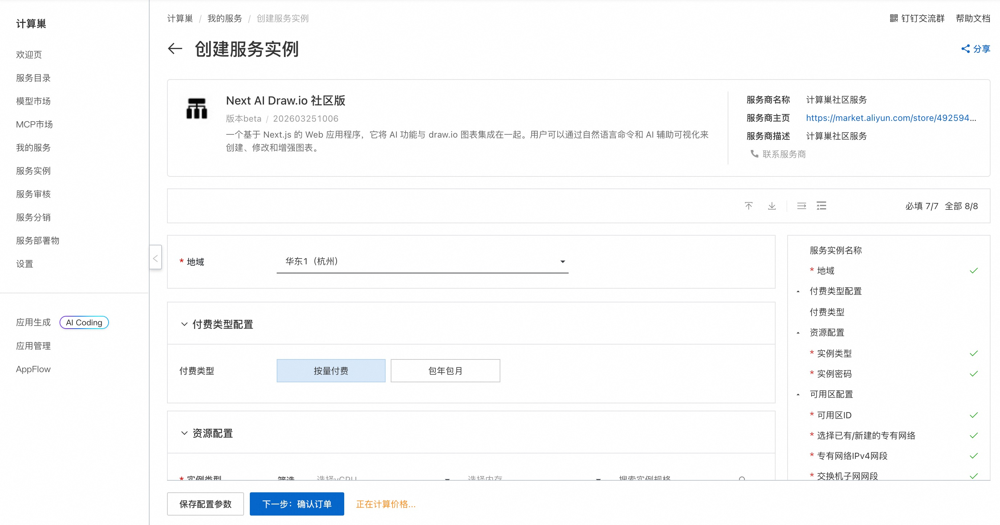
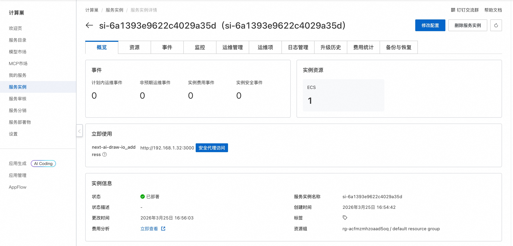
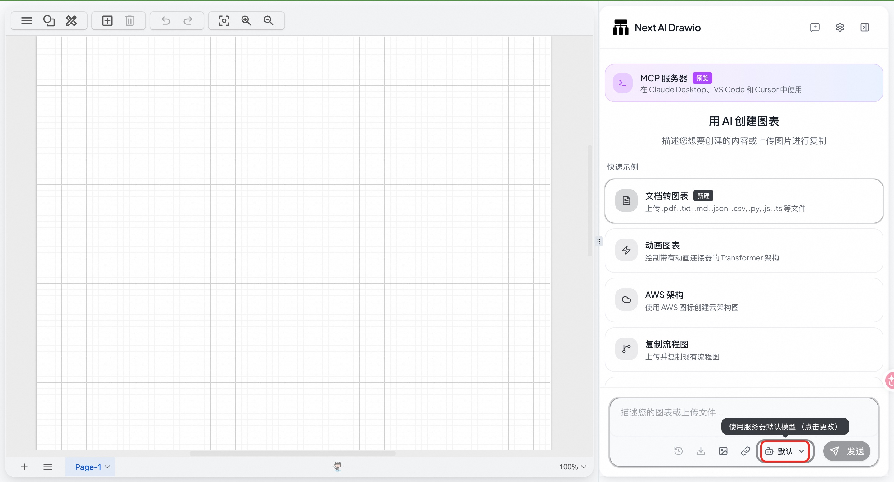
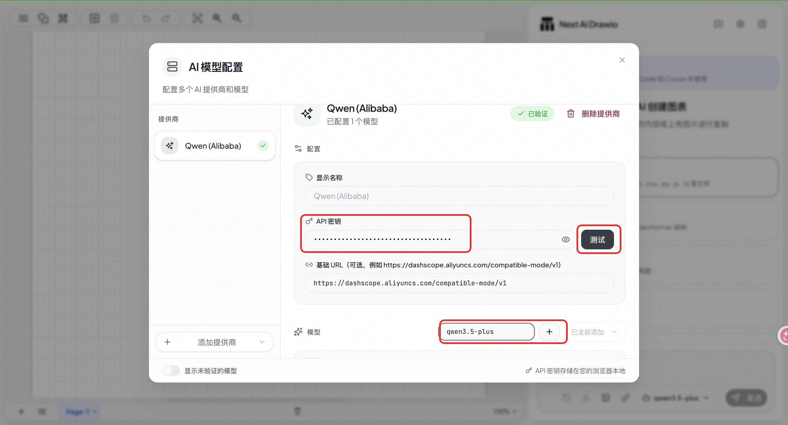
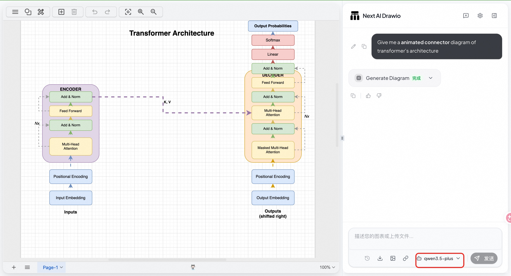

Next AI Draw.io 服务简介
Next AI Draw.io 一个基于 Next.js 的 Web 应用程序，它将 AI 功能与 draw.io 图表集成在一起。用户可以通过自然语言命令和 AI 辅助可视化来创建、修改和增强图表。
🚀 部署流程
-
访问计算巢 Next AI Draw.io 社区版 部署链接，按页面提示填写部署参数：

-
参数配置完成后，系统将自动生成费用预估明细。确认无误后点击 下一步：确认订单。
-
在订单确认页，核对实例信息与费用，点击 立即创建 开始自动部署。
-
部署完成后，通过安全代理访问：

-
访问服务，点击默认修改模型：

-
配置 API Key（获取 Bailian API Key、配置模型并测试:

-
选择已配置的模型，开始使用 AI 绘图：

📚 使用指南
使用请参考 Next AI Draw.io 官方文档 了解完整功能。
© 2009-2022 Aliyun.com 版权所有